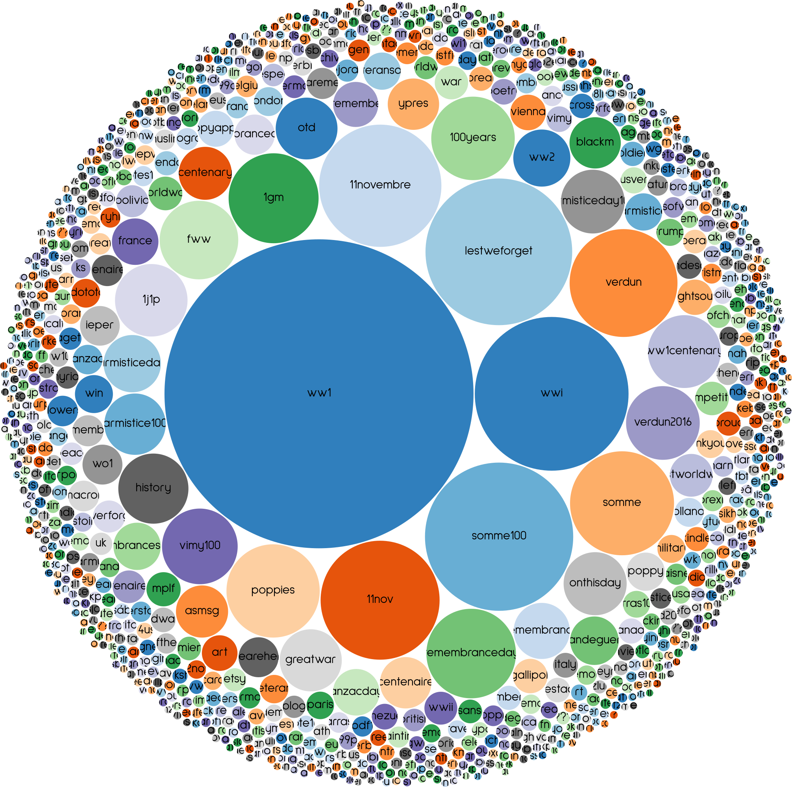
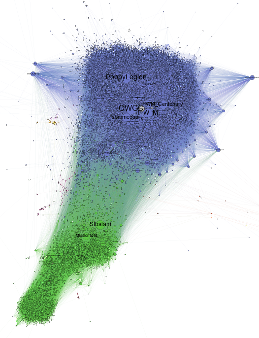
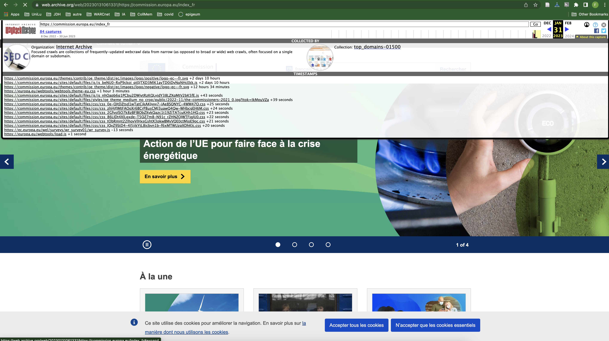
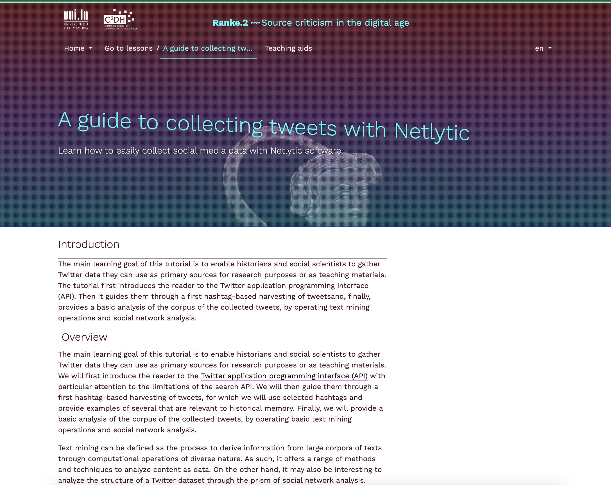

usages scientifiques du web : intérêt, méthodes et limites ?
frédéric clavert
@inactinique@mastodon.social /
frederic.clavert@uni.lu /
inactinique.github.io
école d’été interdisciplinaire, ITI
MAKErs
4 juillet 2023
qui suis-je?
histoire des relations internationales
histoire numérique
digital memory studies
trois projets de recherche:
- #ww1 / le centenaire de la grande guerre sur twitter
- #covid19 / un pays confiné sur twitter
(avec deborah paci) - awac2 / analysing web archives of the covid crisis through the iipc
novel coronavirus dataset
(avec susan aasman, niels brügger, sophie gébeil, valérie schafer, joshgun sirajzade, karin de wild)
l’archive infinie
Milligan, Ian. ‘Lost in the Infinite
Archive: The Promise and Pitfalls of Web
Archives’.
International Journal of Humanities and Arts
Computing, vol. 10, no. 1, Mar. 2016, pp. 78–94.
des sources variées
- newsgroups (usenet / google groups)
- le web et ses 30+ ans d’histoire et de sites (parfois perdus)
- réseaux sociaux numériques et grandes plateformes du web
etc.
de nouvelles sources
ia génératives: les prompts (requêtes), les textes et images engendrées, etc.
des sujets de recherche variées
- migrations / diasporas - dana diminescu
- sociabilités et troubles alimentaires - antonio casilli / paola tubaro
- histoire parlementaire - kimmo elo
- (digital) memory studies - andrew hoskins
- genre - thibault grison / virginie julliard
- espaces publics - fred pailler / maxime cervulle
- histoire du temps présent: projets asap (valérie schafer) / multitude de projets autour du covid-19
- le web lui-même: reconstitution d’un domaine national disparu (.yu)
- histoire sociale et web (nadezhda povroznik)
etc…
des sources à évaluer
sources archivées…
archives du web
- bien connaître les conditions d’archivage
- les relier au sujet de recherche
…sources sauvées…
- geocities
Milligan, Ian. ‘Welcome to the Web: The Online Community of GeoCities during the Early Years of the World Wide Web’. in: The Web as History: Using Web Archives to Understand the Past and the Present, edited by Niels Brügger and Ralph Schroeder, UCL Press, 2017. DOI.org (Crossref), https://doi.org/10.2307/j.ctt1mtz55k.
…sources à collecter
- de natures variées (newsgroups, social media, etc),
- des techniques de collecte diverses,
- de plus en plus difficiles à collecter
- conditions éthiques et légales à considérer
lire les sources de l’archive infinie
lecture proche, lecture distante…
…lecture multiscalaire
Clavert, Frédéric, and Andreas Fickers. ‘On Pyramids, Prisms, and Scalable Reading’. Journal of Digital History, no. jdh001, 2021, https://journalofdigitalhistory.org/en/article/jXupS3QAeNgb.
la lecture distante pour comprendre un corpus
analysing web archive of the covid crisis
(awac2)
archives unleashed (waterloo) / archive-it
(internet archive)
la lecture distante à des fins d’analyse




la lecture proche des archives du web
Brügger, Niels. The Archived Web: Doing History in the Digital Age. MIT Press, 2018.
enjeux et limites méthodologiques
archives reconstituées et inconsistences temporelles

Brügger, Niels. The Archived Web: Doing History in the Digital Age. MIT Press, 2018.
Clavert, Frédéric, Mahroug, Sophia, Schafer, Valérie. ‘Préservation et distorsion : l’espace-temps des réseaux socio-numériques et du web archivé’. Revue d’histoire culturelle, vol. 2022, no. 5, Oct. 2022, https://doi.org/10.56698/rhc.2791.
choix des outils et choix historiographiques
dépendance aux grandes plateformes

« Les
conversations sur les médias sociaux sont des expressions démocratiques
qui ne sauraient être cachées à la recherche »’.
Le Monde.fr,
16 Juin 2023.
en guise de conclusion
pour commencer
- Gebeil, Sophie. Website story: histoire, mémoires et archives du web. INA, 2021.
- Schafer, Valérie. En construction: La fabrique française d’Internet et du Web dans les années 1990. INA, 2018.
- Brügger, Niels. The Archived Web: Doing History in the Digital Age. MIT Press, 2018.
- Milligan, Ian. The Transformation of Historical Research in the Digital Age.Cambridge University Press, 2022.
- Brügger, Niels, and Ralph Schroeder, editors. Web as History: Using Web Archives to Understand the Past and the Present. UCL Press, 2017.
sociologie et memory studies
Casilli, Antonio. Les liaisons numériques vers une nouvelle sociabilité? Le Seuil, 2010.
Lupton, Deborah. Digital Sociology. Routledge, Taylor & Francis Group, 2015.
Boullier, Dominique. Sociologie du numérique. Armand Colin, 2016.
Casilli, Antonio, and Paola Tubaro. Le phénomène ‘pro-ana’: Troubles alimentaires et réseaux sociaux. École des mines, 2016.
Hoskins, Andrew, editor. Digital Memory Studies: Media Pasts in Transition. Routledge, 2018.
et pour aller plus loin
publications de Dana Diminescu
Grison, Thibault, and Virginie Julliard. ‘Les enjeux de la modération automatisée sur les réseaux sociaux numériques : les mobilisations LGBT contre la loi Avia’. Communication, technologies et développement, no. 10, 10, May 2021.
Milligan, Ian. ‘Lost in the Infinite Archive: The Promise and Pitfalls of Web Archives’. International Journal of Humanities and Arts Computing, vol. 10, no. 1, Mar. 2016, pp. 78–94.
Milligan, Ian. ‘Welcome to the Web: The Online Community of GeoCities during the Early Years of the World Wide Web’. in: The Web as History: Using Web Archives to Understand the Past and the Present, edited by Niels Brügger and Ralph Schroeder, UCL Press, 2017.
Clavert, Frédéric, and Andreas Fickers. ‘On Pyramids, Prisms, and Scalable Reading’. Journal of Digital History, no. jdh001, 2021.
Clavert, Frédéric, Mahroug, Sophia, Schafer, Valérie. ‘Préservation et distorsion : l’espace-temps des réseaux socio-numériques et du web archivé’. Revue d’histoire culturelle, vol. 2022, no. 5, Oct. 2022.
pour aller plus loin (suite)
« Les conversations sur les médias sociaux sont des expressions démocratiques qui ne sauraient être cachées à la recherche »’. Le Monde.fr, 16 Juin 2023.
Cervulle, Maxime, and Fred Pailler. ‘#mariagepourtous : Twitter et la politique affective des hashtags’. Revue française des sciences de l’information et de la communication, no. 4, Jan. 2014.
Ben-David, Anat. ‘What Does the Web Remember of Its Deleted Past? An Archival Reconstruction of the Former Yugoslav Top-Level Domain’. New Media & Society, vol. 18, no. 7, Aug. 2016, pp. 1103–19.